MS thesis work at Northeastern University: building and characterising the actuators of the Harpy robot leg, toward a learned model of their dynamics for high-fidelity impedance control.
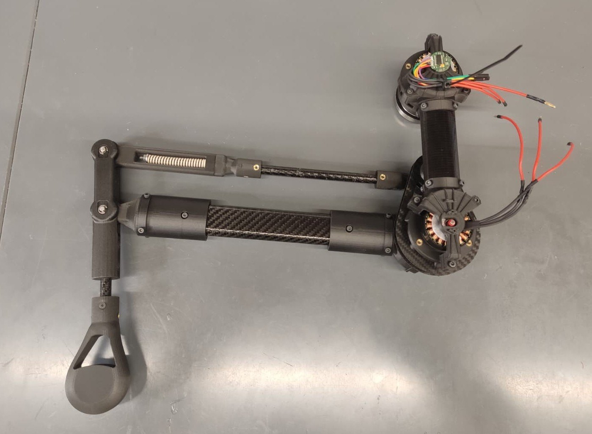
Analytical actuator models leave out effects that matter on real hardware: compliance, damping, friction and control delays. The thesis set out to learn a model of Harpy's actuator dynamics from measured data, and use it inside a joint-level impedance controller so the leg could be commanded in terms of stiffness and damping rather than position alone.
Getting there needed hardware first. Before any data could be collected, both actuators of the leg had to be assembled, debugged and shown to run cleanly, and a test bench had to exist to measure them on. That hardware work is what this page is mostly about.
Note: The project was left in standby when I started my co-op, so the modelling and data collection stages were not reached. What follows is the work that was completed.
The first assembled joint had far more friction than it should have, and tracking down the cause took several weeks of stripping it down and measuring. The problems compounded on each other:
I estimated at the time that around 80% of the friction was coming from inside the harmonic housing. Taking the harmonic drive out confirmed it. The shaft had been poorly machined, and the lab manager confirmed the university did not have a machine precise enough to remake it to tolerance.
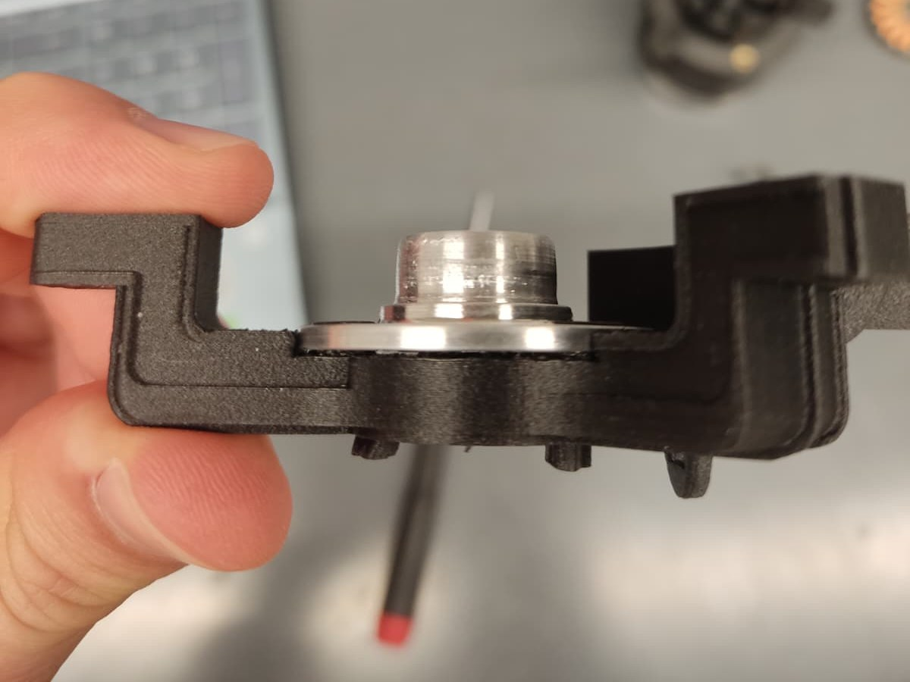
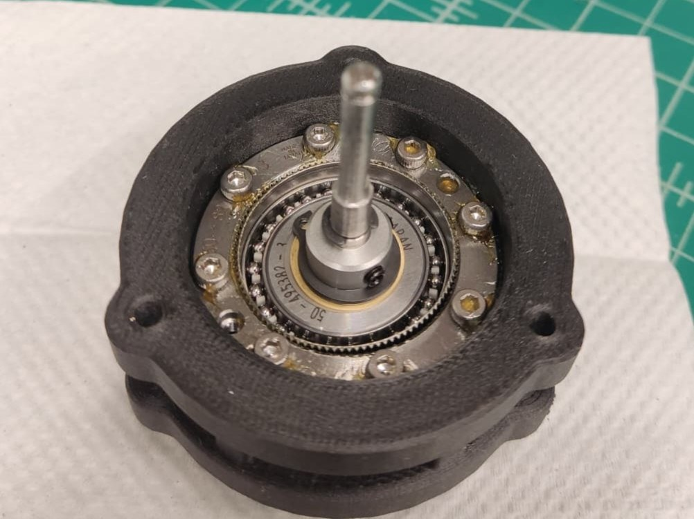
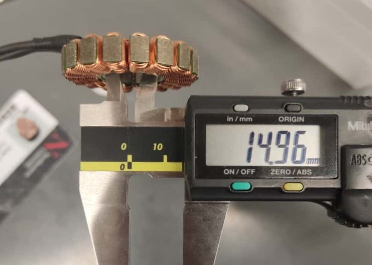
With the first actuator working, I built the second one for the knee. The harmonic drive housing is a single 3D print of ten and a half hours with six programmed pauses, each needing a part inserted mid-print: two carbon fibre plates, three ball bearings and eight heat inserts. There was no documentation of what each pause was for, so I photographed every one as I went and wrote the sequence up.
Assembly came down to tolerances. Both bearings measured under their nominal bores, by 0.04 mm and 0.06 mm, and the stainless shaft measured 4.99 mm where it needed to clear a 5 mm bearing. I machined the stator mount and the shaft to fit on the lathe, taking material off in small passes and test-fitting as I went, since there was no margin to overshoot.
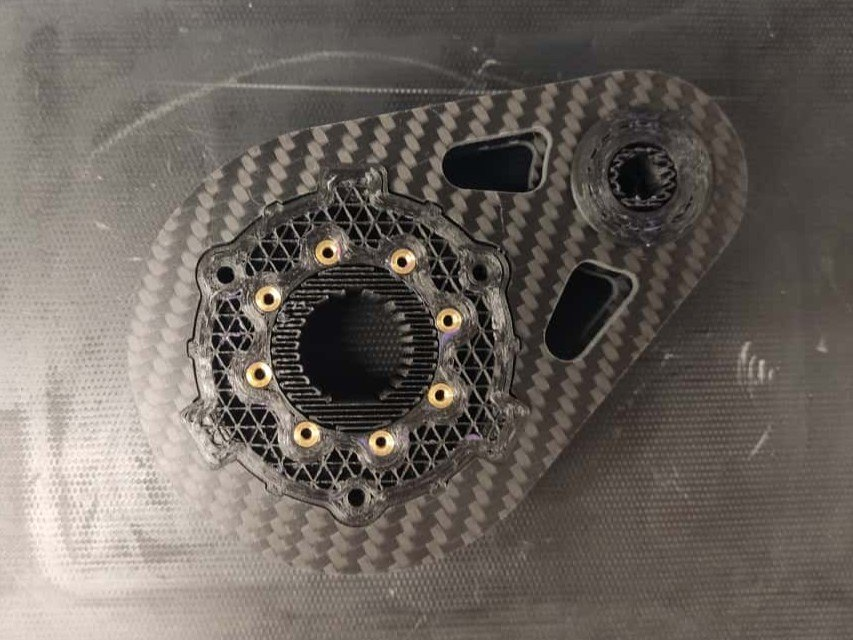
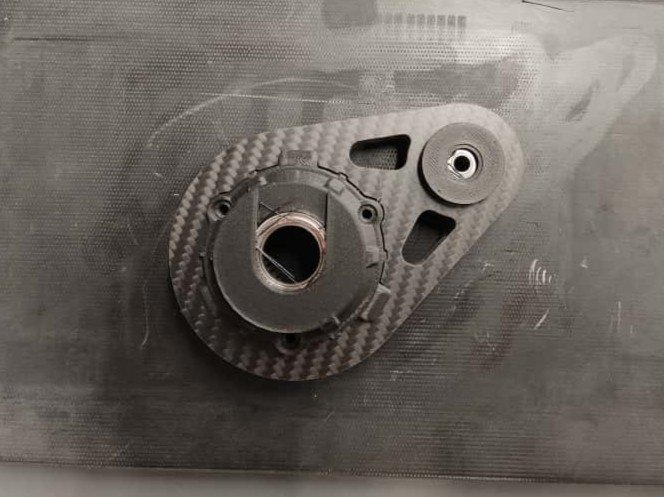
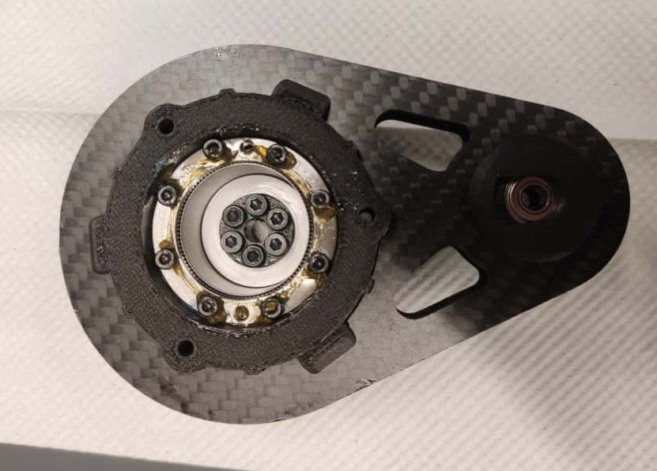
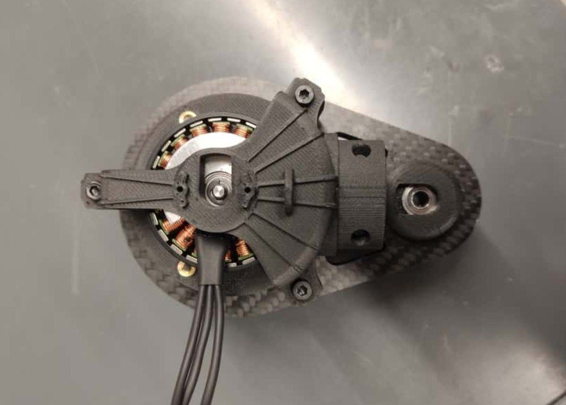
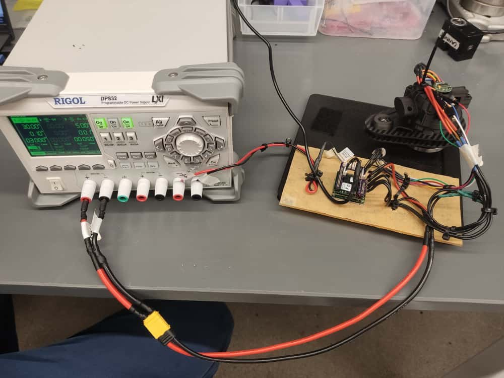
With both actuators tested individually, I assembled the full leg. The lab was out of the ellipsoidal carbon fibre rods the design called for, so I designed and printed an adapter to take rectangular stock instead. The rods were cut on a bandsaw with the extraction and PPE needed for carbon fibre dust, and drilled using a printed guide so the hole spacing stayed consistent.
The finished leg was mounted to a gantry through another printed adapter, giving the vertical test bench the modelling work would have run on. The leg was complete mechanically. Electrical wiring of the full assembly was the next step and was not reached.
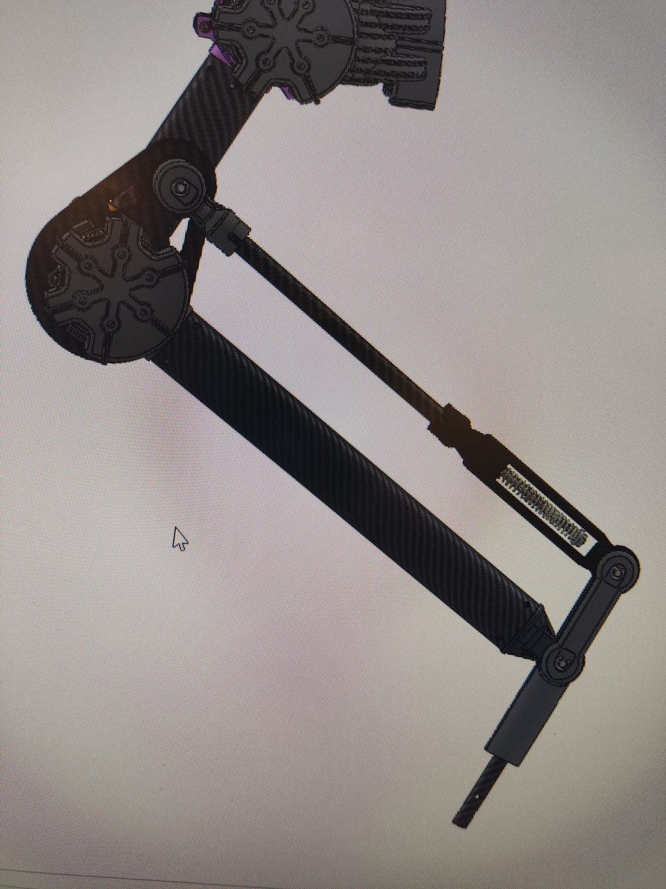
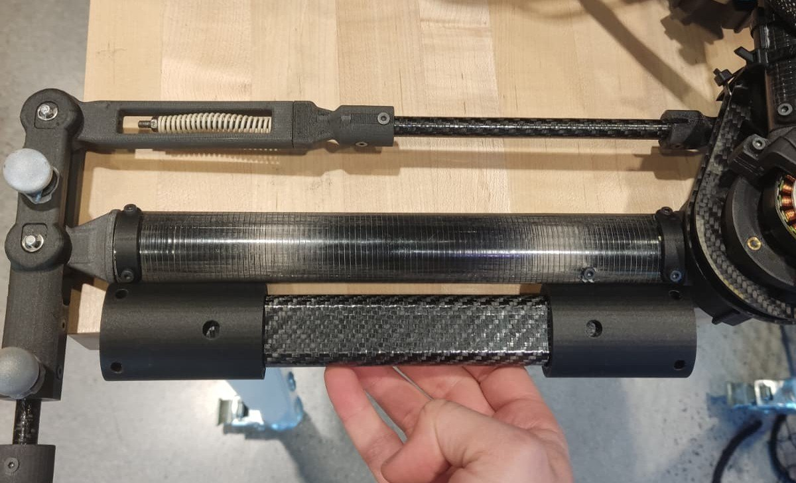
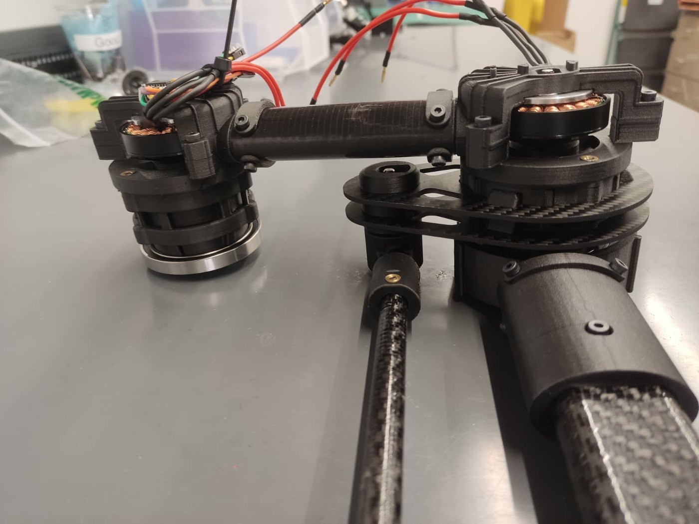
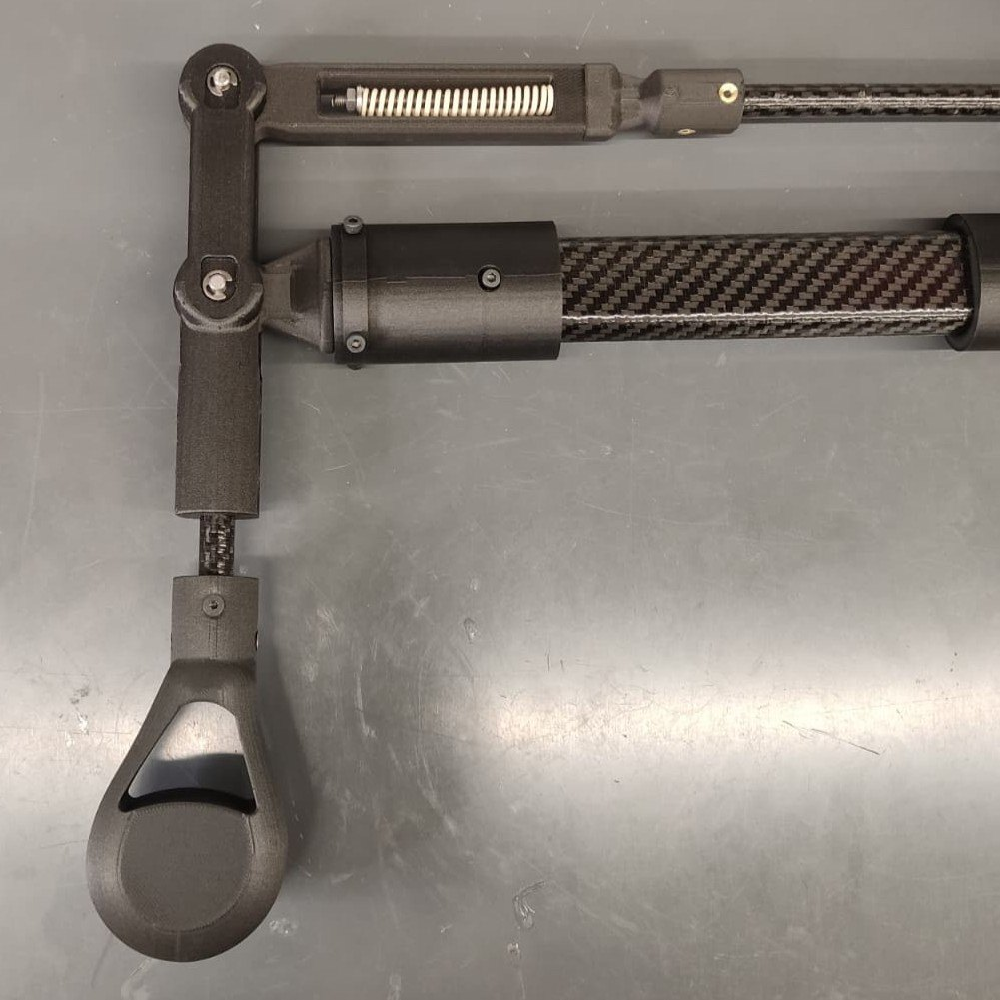
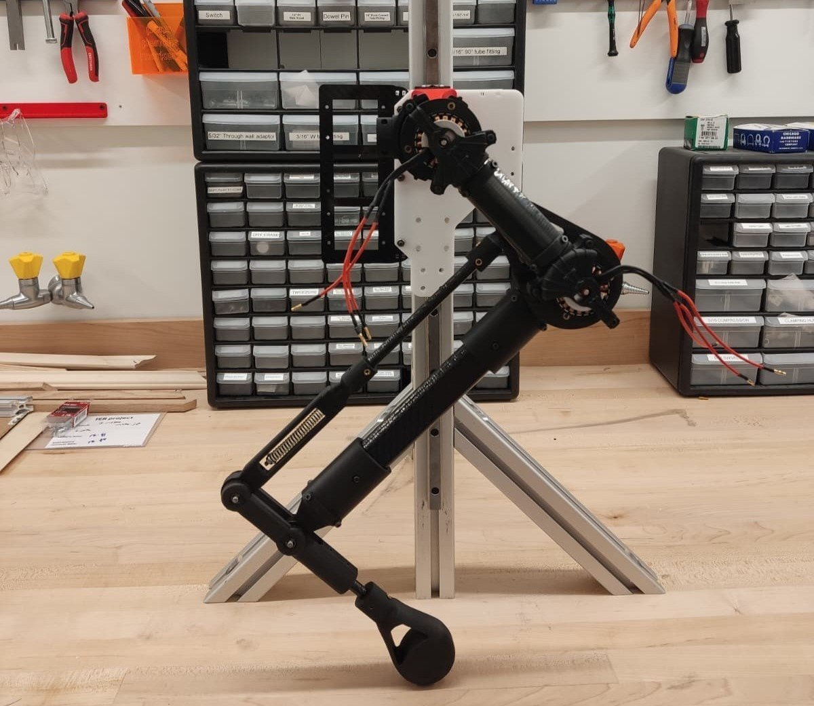
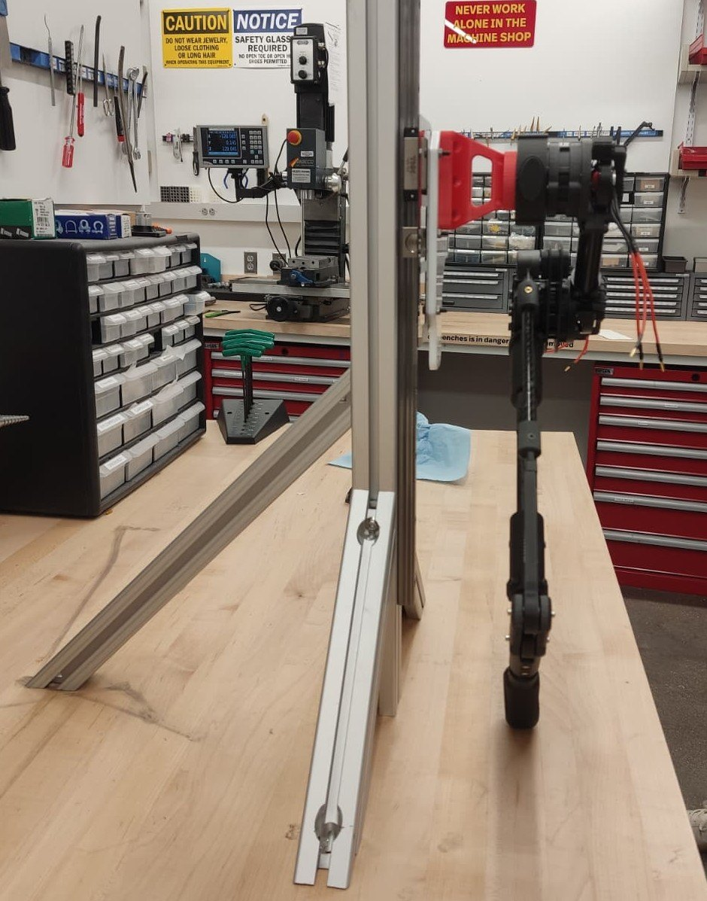
Alongside the hardware I reviewed the literature on impedance control, system identification, residual learning and neural network methods, and narrowed the modelling stage to three candidate approaches. Choosing between them was the next decision point when the project stopped.